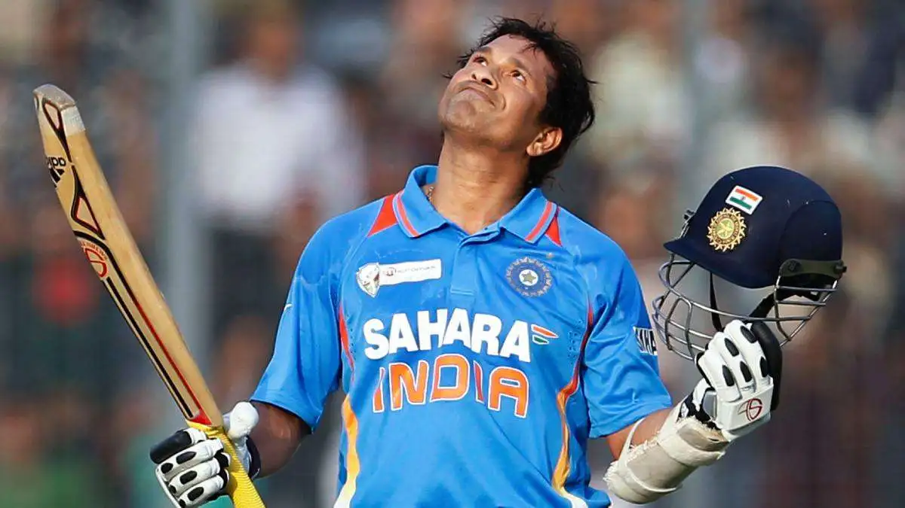
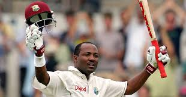

ICC Events - Legendary Cricketers

Chris Gayle (T20)
Records: 1,627 T20I runs, 2 centuries, 142.84 strike rate; IPL 4,484 runs (up to 2019).
Achievements: First T20I century (2007); won 2012 T20 World Cup; IPL Orange Cap (2011, 2012).

Sachin Tendulkar (ODI)
Records: 18,426 ODI runs, 49 centuries, first ODI double century (2010).
Achievements: Most international centuries (100); 2011 World Cup winner; Bharat Ratna (2014).

Brian Lara (Test)
Records: 11,953 Test runs, 34 centuries, highest Test score 400* (2004).
Achievements: First-class record 501* (1994); led West Indies to 2004 ICC Champions Trophy.